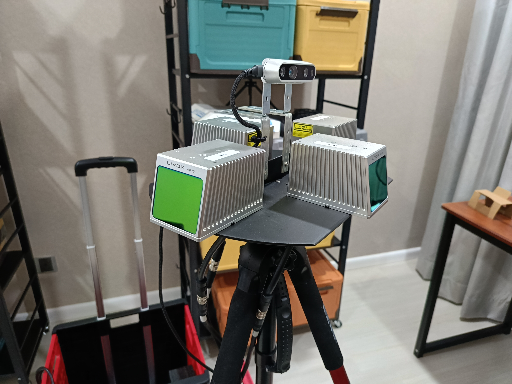

Outdoor Mapping
Advanced outdoor mapping system using 3D lidars for comprehensive environmental scanning and terrain mapping.
Project Overview
Comprehensive outdoor mapping solution utilizing advanced 3D lidar technology for high-precision environmental scanning and terrain mapping. The system is designed to capture detailed spatial data for various applications including autonomous navigation, environmental monitoring, and infrastructure planning.
Technical Implementation
Key Features
- 3D Lidar Technology: High-resolution 3D point cloud generation
- Outdoor Optimization: Designed for challenging outdoor environments
- Real-time Processing: Live data acquisition and processing capabilities
- High Accuracy: Centimeter-level precision in mapping
- Large Area Coverage: Efficient mapping of extensive outdoor areas
Applications
- Autonomous Navigation: Path planning and obstacle avoidance for autonomous vehicles
- Environmental Monitoring: Terrain analysis and environmental assessment
- Infrastructure Planning: Site surveying and construction planning
- Research and Development: Robotics research and algorithm development